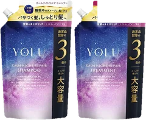
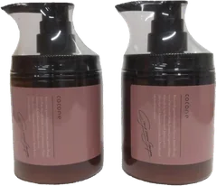
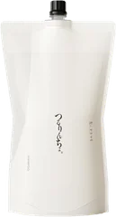
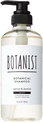
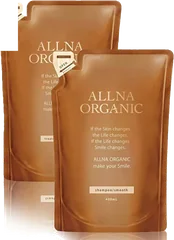
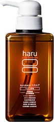

42位

YOLU
ナイトリペア シャンプー 詰替
詰替
¥1,210税込・出典掲載価格
クチコミの要約
- 手触りがとろんとする
- 元美容師も一番って言ってた
気になる声詰め替えが最後まで吸えない
販売価格・容量・送料はリンク先でご確認ください
THE COSME EDIT / 2026.09.11
動画で紹介した6品です。順位は楽天のランキングのまま、歯抜けで出しています。
06 ITEMS 動画で紹介した商品
シャンプーの単品（同じ商品の複数本・詰め替えを含む）だけを選びました。違う商品を組み合わせたセット、育毛剤、薬用スカルプは外しています。同じブランドは最上位の1つだけにしました。
価格は出典掲載時のものです。楽天の現在価格とは異なる場合があります。

YOLU
詰替
¥1,210税込・出典掲載価格
クチコミの要約
気になる声詰め替えが最後まで吸えない
販売価格・容量・送料はリンク先でご確認ください

cocone
380g×3
¥11,580税込・出典掲載価格
クチコミの要約
気になる声1回に使う量が多い
販売価格・容量・送料はリンク先でご確認ください

髪にドラマを
1000mL
¥9,400税込・出典掲載価格
クチコミの要約
気になる声値段が高いって声も
販売価格・容量・送料はリンク先でご確認ください

BOTANIST
490mL
¥1,540税込・出典掲載価格
クチコミの要約
気になる声ベタつくって声もある
販売価格・容量・送料はリンク先でご確認ください

オルナ オーガニック
400mL
¥1,880税込・出典掲載価格
クチコミの要約
気になる声ちょっと割高って声も
販売価格・容量・送料はリンク先でご確認ください

haru
400mL×3
¥10,302税込・出典掲載価格
クチコミの要約
気になる声きしむって声もある
販売価格・容量・送料はリンク先でご確認ください
SOURCE & NOTES
集計期間：2026年9月10日の売上です（楽天スーパーSALEの期間中）。今の売れ筋順ではありません。
（2026年9月11日に楽天の商品ページで確認した価格）